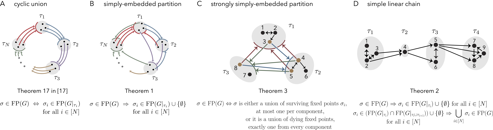
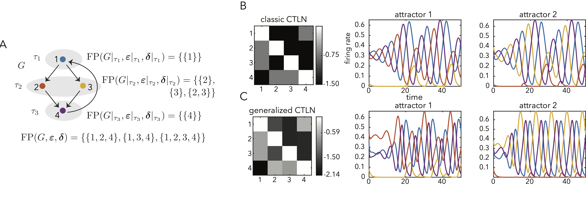
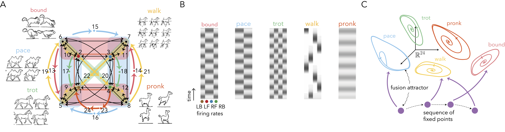
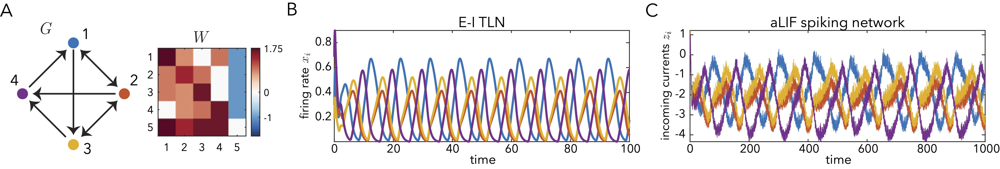
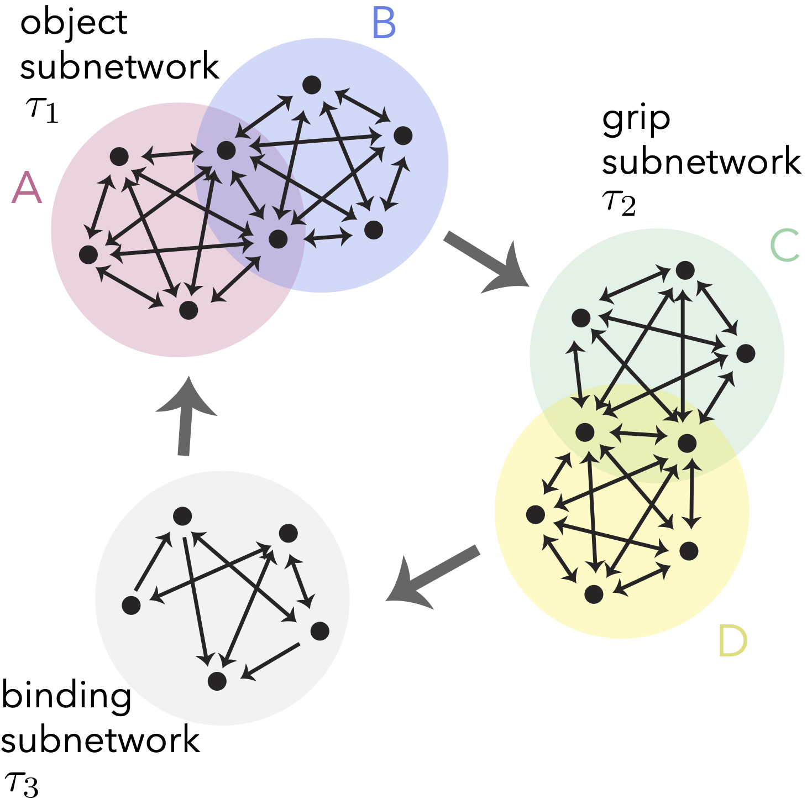

🎉 News: Starting September 16th, 2026, I will be joining SISSA (Scuola Internazionale Superiore di Studi Avanzati) as a postdoc in Francesca Mastrogiuseppe's group!
I am currently a Provost's STEM Postdoctoral Fellow in the Division of Applied Mathematics at Brown University, working with Carina Curto. My research investigates how network architecture shapes dynamics, with a particular focus on sequences and oscillations.
My approach combines theoretical work with computational simulations, using tools from dynamical systems, graph theory, and linear algebra. I use these to analyze how the connectivity structure of modular graph-based threshold-linear networks (TLNs) shapes their dynamics.
The goal of this modular approach is to (1) propose mechanistic hypotheses about how the brain generates and combines complex static and dynamic patterns of activity, and (2) provide design principles for new and efficient neuro-inspired AI and neuromorphic hardware.
I obtained my Ph.D. in Mathematics from Penn State University, where I was supervised by Carina Curto. I obtained my B.Sc. in Mathematics from Universidad Nacional de Colombia, where I wrote a monograph on De Rham cohomology under the supervision of Alexander Quintero.
Grants & Funding
National Science Foundation (NSF) DMS-2602201
Division of Mathematical Sciences — Single PI
NSF Program: Mathematical Biology
Project: "Sequential and fusion attractors as a mechanism for complex rhythm generation and neural binding in recurrent networks"
Aug 2026 – Jul 2029
Research
1. How do modular network architectures support sequential dynamics?
This project investigated variations of the cyclic union architecture (panel A) that also support sequential dynamics. As a result, I obtained three new architectures (panels B - D), each with theorems constraining the fixed points of the whole network in terms of the fixed points of its component subnetworks.

Summary of new architectures and their related theorems for sequential dynamics.
Related Publication: Sequential attractors in combinatorial threshold-linear networks.
2. How can these network principles be generalized for more flexible control?
In this project, I generalized the modular structures above to a broader class of networks (gCTLNs). This extended the framework to allow for neuron-specific inhibition parameters, rather than just global ones. These results demonstrate the robustness of modular network design and enable more flexible control over the network's dynamics.

Comparison of CTLN and gCTLN dynamics, showing more flexible patterns.
Related Publication: Fixed point decompositions for composite generalized combinatorial threshold-linear networks. (In preparation)
3. How can we leverage these insights to engineer efficient networks for complex behaviors?
We can use the cyclic union structure to model quadruped gaits. In this project, I designed a single 23-node network that supports five different quadruped gaits (panel A), each one encoded as a different dynamic attractor accessible via different initial conditions (panel B).
Also, by coupling this network to sequence of fixed points, we created a network that can step through a sequence of different gaits, by independently encoding of motor motifs and sequence position (panel C).

A single network capable of producing five different quadruped gaits.
Related Publication: Attractor-based models for sequences and pattern generation in neural circuits. (Preprint)
4. Can these design principles be translated to neuromorphic hardware?
Currently, we are trying to translate the design principles of graph-based TLNs into analog neuromorphic hardware. With our collaborator Marcelo Rozenberg, we have already reproduced some small motifs (see Fig) from our theory, using the dynamics of his model neurons via simulations. We are working on implementing more complex computations, and moving them onto hardware.

Comparison of aLIF and CTLN models.
5. How can attractor models explain neural binding in cortical circuits?

Binding modeled as a cyclic union.
This project seeks to understand how the brain composes skilled and flexible behavior through networks that dynamically link neurons across cortical areas. We are developing attractor models for neural binding using data from a delayed reaching task from the Donoghue lab. The task's combinatorial design, which recorded neural activity for specific object-grip combinations, makes it ideal for testing mechanistic hypotheses about the compositional reuse of neural populations. We are exploring models like the cyclic union (Fig) to test different predictions about these binding dynamics.
Publications
Fixed point compositionality via low-rank gluing rules in inhibition-dominated threshold-linear networks. J. Londoño Álvarez. Preprint: https://arxiv.org/abs/2606.07336.
Attractor-based models for sequences and pattern generation in neural circuits. J. Londoño Álvarez, K. Morrison, C. Curto. Neural Computation, 2026, Vol. 38, Issue 3, pp. 257–291.
Sequence generation in inhibition-dominated neural networks. C. Parmelee, J. Londoño Álvarez, C. Curto, K. Morrison. DSWeb Dynamical Systems Magazine, 2023.
Sequential attractors in combinatorial threshold-linear networks. C. Parmelee, J. Londoño Álvarez, C. Curto, K. Morrison. SIAM Journal on Applied Dynamical Systems, Vol. 21, Issue 2, pp. 735-1661.
Presentations
Talks
- Invited talk: MathSphere APMA, Brown University, USA, Apr 2026
- Talk: Carney Lunch Flash, Brown University, USA, Apr 2026
- Invited talk: Data Science Seminar, Scuola Internazionale Superiore di Studi Avanzati (SISSA), Italy, Mar 2026
- Invited talk: Boston University Dynamics Seminar, Boston University, USA, Sep 2025
- Talk: NITMB MathBio Convergence Conference (selected for talk), Chicago, USA, Aug 2025 [video and slides]
- Invited talk: SIAM Conference on Algebraic Geometry, Madison, USA, Jul 2025
- Invited talk: SIAM Conference on Dynamical Systems, Denver, USA, May 2025
- Invited talk: Special Session of AMS Sectional Meeting, University of Connecticut, USA, Apr 2025
- Invited talk: New England Dynamics Seminar, University of Massachusetts Amherst, USA, Nov 2024
- Invited talk: Lefschetz Center for Dynamical Systems seminar, Brown University, USA, Nov 2024
- 🇨🇴 Invited talk: 2da Semana Institucional de Ciencias Básicas, Fundación Universitaria de Ciencias de la Salud, Colombia, Jul 2024
- 🇨🇴 Invited talk: MAPI3: Tercera Conferencia Colombiana de Matemáticas Aplicadas e Industriales, Online, Colombia, Jun 2024 [pdf]
- Invited talk: Special Session of AMS Sectional Meeting, Creighton University, USA, Oct 2023
- Talk: CCN Junior Theoretical Neuroscientist’s Workshop, Flatiron Institute, USA, Jun 2023
- Talk: CoNNExINS, New York University, USA, Jun 2023
- Invited talk: Diversity in Math Bio summer seminar, Society for Mathematical Biology, Online, USA, Jun 2023
- Invited talk: Theoretical biology seminar, Pennsylvania State University, USA, Oct 2022
- Invited talk: Dynamical Principles of Biological and Artificial Neural Networks Workshop, BIRS, Canada, Jan 2022 [video]
Poster presentations
- Poster: BRAIN NeuroAI Workshop (selected for Poster Blitz presentation), National Institutes of Health, USA, Nov 2024
- Poster: Benzon Symposium 67, Copenhagen, Denmark, Sep 2023 [pdf]
- Poster: Society for Neuroscience, San Diego, USA, Nov 2022 [pdf]
- Poster: Center for Neural Engineering Retreat, Penn State, USA, Aug 2022
- Poster: Computational Neuroscience Meeting (CNS), Online, USA, Jul 2021
Teaching
During my time at Penn State (2020–2024), I was an Instructor for MATH220 (Matrices) for 3 semesters. I received the Departmental Graduate Teaching Award in Fall 2022.
During my time at Universidad Nacional de Colombia (2017–2019), I was an Instructor for Vector Geometry (2 semesters) and a Teaching Assistant for Linear Algebra (1 semester) and Vector Geometry (3 semesters).
Other projects
The impact of urban features on health outcomes.
Community detection of neural ensembles from large spike-train data. 2-week project at the Allen's Summer Workshop on the Dynamic Brain.